Sacroiliac Anatomy
- Traditionally, the SIJs were considered to consist of a smaller posterosuperior ligamentous compartment and a larger anteroinferior synovial compartment.
- More recent research has stimulated a debate on whether the articulation is best classified as a symphysis rather than a synovial joint.
- The articular margins of the sacrum and iliac bones are irregular with interdigitations, which limit mobility and enhance the strength of these joints.
- The articular surface of the sacrum is C or L-shaped, opening dorsally. There are irregular bony pits, dorsal to the articular surface, at the site of ligamentous attachment, the dorsal syndesmosis.
- The articular surface at the centre of the SIJs has hyaline cartilage with fibrocartilage only at the periphery.
- The periphery of the cartilage, with the exception of the distal third of the iliac cartilage, blends with the stabilizing ligaments as in a symphysis and forms a wide margin of fibrocartilage.
- A small synovial recess exists at the ventral aspect of the distal third of the iliac aspect of the joint.
- The SIJ’s are probably therefore best described as a symphysis with characteristics of a synovial joint being restricted to the ventral aspect of the distal cartilaginous portion at the iliac side.
- Under the age of 30 years, the SIJ’s are usually symmetric in appearance.
- A higher prevalence of asymmetric non-uniform joint space narrowing and ill-defined subchondral sclerosis has been observed in women, obese and multiparous females than in age matched males, and individuals of normal weight and non-multiparous respectively.
- The width of the normal SIJ varies from 2 to 5mm.
- The normal SIJ can demonstrate considerable variability, particularly with increasing age.
- Prominent sacral irregularities and marrow defects at the attachment of the interosseous ligaments, termed insertion pits, may be seen in normal subjects.
- Multiple anatomical variants have been observed in patients undergoing pelvic CT for indications other than disease of the SIJ’s. These include:
- Accessory joints (19%)
- “Iliosacral complex” (6%)
- Bipartite iliac bony plate (4%)
- Crescent-like iliac bony plate (4%)
- Semicircular defects at the sacral or iliac side (3%)
- Ossification centres (1%)
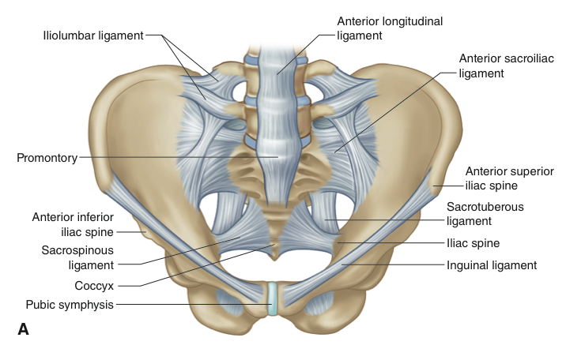
info_outline
{kind=link}
a) Illustration normal anatomy of the sacroiliac joints with overlying ligaments-Anterior view
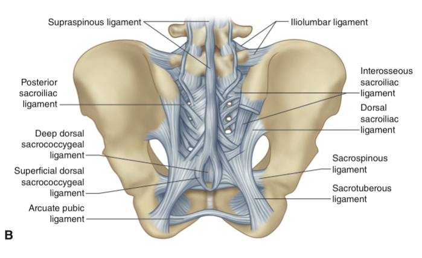
info_outline
{kind=link}
b) Illustration normal anatomy of the sacroiliac joints with overlying ligaments-Posterior view
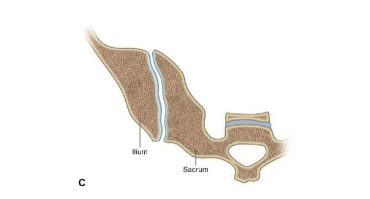
info_outline
{kind=link}
c) Illustration normal anatomy of the right sacroiliac joint -axial cut through the joint demonstrating normal interdigitations of the articulation
Radiograph
- Plain radiography has and continues to play an important role in the investigation of SII and is an integral part in the diagnosis of AS.
- The anatomy of the sacroiliac joint, due to its oblique nature and overlap of the sacral and iliac components, has led to significant inter and intra observer variations particularly in the interpretation of early SII.
- Radiographic projections include dedicated AP and bilateral oblique views. If the AP study is normal then the oblique views may not be required
- Note that a dedicated AP of the lumbar spine often includes a diagnostic assessment of the SIJ and may not require any further radiographs.
- Radiographs of the lumbar spine and SIJ incur a significant radiation dose (Single AP lumbar spine has a typical effective dose of up to 2.2mSV)
- Some centres advocate a baseline AP of the pelvis. This allows for a combined assessment of the sacroiliac joints and the hip joints, the latter may be involved in up to 25% of patients with SpA.
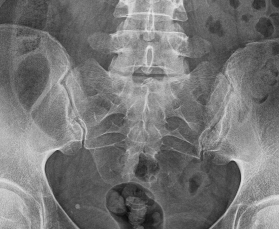
info_outline
{kind=link}
Cor T1FS post gadolinium | Image demonstrating enhancement in the right entheseal compartment. One should be careful that apparent entheseal enhancement is not vascular, axial images may be helpful in this regard. Contrast enhancement is not routinely
performed.
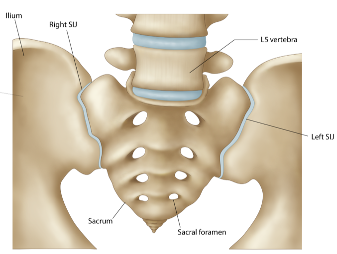
info_outline
{kind=link}
Cor T1 | Note also early joint space, mild subchondral sclerosis loss, erosions and post inflammatory fat accentuation (on T1)
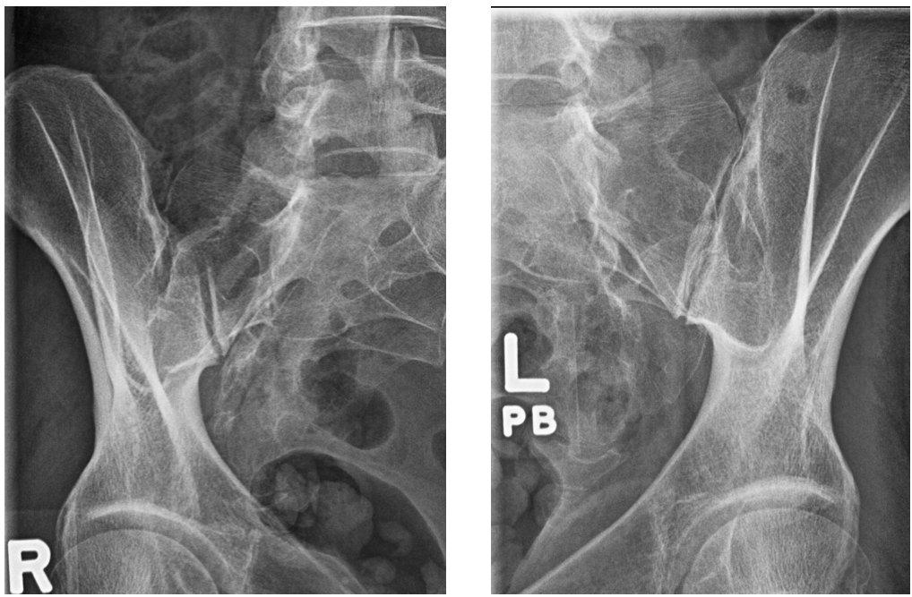
info_outline
{kind=link}
STIR in acute on chronic SII | On STIR there is bilateral subchondral high signal intensity, low on T1, in keeping with edema/osteitis
MRI
- MRI is the imaging gold standard for sacroiliitis.
- MRI is non-ionizing, provides excellent anatomical detail and delineation of both acute and chronic changes of sacroiliitis.
- We will briefly review the anatomy of the sacroiliac joints on MRI prior to reviewing pathological changes.
Coronal T1 SIJ (from anterior to posterior)
- On T1FS (T1 Fat Saturated) articular cartilage is of intermediate to high signal intensity and the altered grey scale of the T1FS sequence improves visualization of the cartilage and adjacent cortical bone.
- Standard T1 sequences (without fat saturation) are, however, invaluable in assessing the subchondral bone marrow and, in particular, in differentiating between subchondral sclerosis and fat that may both appear as low signal on T1FS.
- In general, the subchondral bone marrow has homogenous intermediate signal intensity on T1.
- In adults, the subchondral bone may of heterogeneous signal due to non-uniform hemopoeitic marrow.
- Assessing the marrow signal intensity at the level of the sacral foramina can serve as a baseline for the normal appearance of marrow in individual patients
- Cartilage is well visualized as a zone of intermediate signal intensity on both T1 and T2 weighting bounded on either side by low signal intensity intact subchondral bone plate of the underlying sacrum or ilium.
- The combined cartilage has a maximum thickness of 4 to 5mm and is slightly thinner anteriorly and inferiorly. It is not possible to differentiate hyaline and fibrous cartilage by signal intensity.
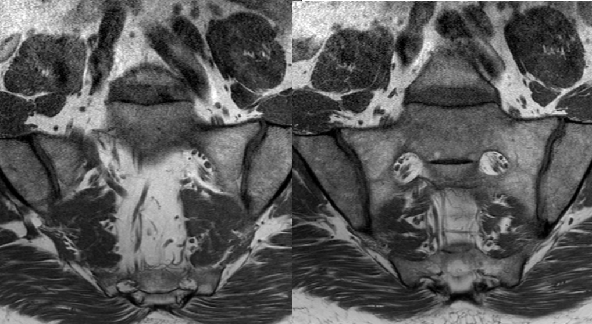
info_outline
{kind=link}
a) Coronal T1 SIJ (from anterior to posterior)
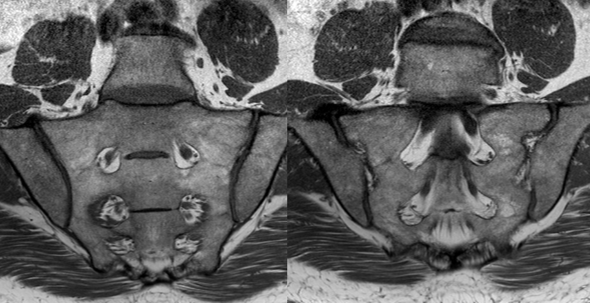
info_outline
{kind=link}
b) Coronal T1 SIJ (from anterior to posterior)
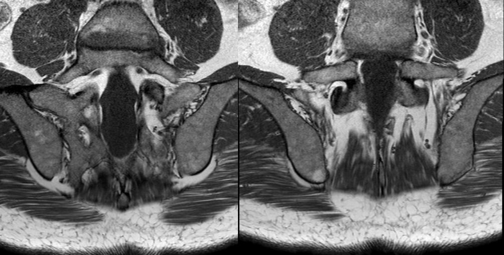
info_outline
{kind=link}
c) Coronal T1 SIJ (from anterior to posterior)
Coronal T2FS SIJ (from anterior to posterior)
- On T2FS (T2 Fat Saturated) or STIR imaging cartilage is intermediate to high signal intensity. Any fluid within the joint space will be high signal intensity, similar to CSF that can be seen in the lower thecal sac.
- Subchondral bone plate is thin, regular and of low signal intensity
- The subchondral marrow is low signal intensity, due to the suppression of the normal fat signal within normal marrow.
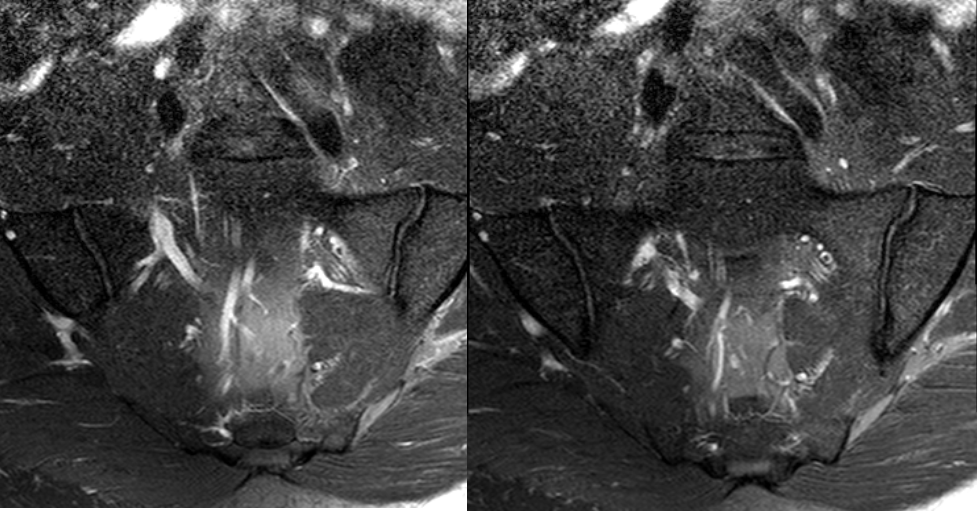
info_outline
{kind=link}
a) Coronal T2FS SIJ (from anterior to posterior)
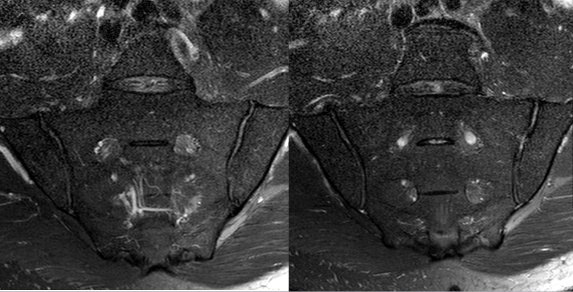
info_outline
{kind=link}
b)Coronal T2FS SIJ (from anterior to posterior)
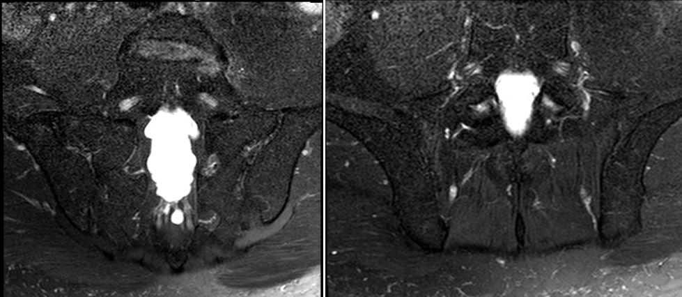
info_outline
{kind=link}
c) Coronal T2FS SIJ (from anterior to posterior)
CT
- CT provides excellent bone detail and is the gold standard in the assessment of erosions.
- The joint space, subchondral bone plate, subchondral bone are clearly delineated.
- CT can not detect bone marrow oedema and has low sensitivity for post inflammatory fat accentuation and joint effusions
- CT incurs a significant radiation exposure and imaging is usually confined to those patients who are unable to undergo MRI and diagnosis/management options can not be satisfied with radiographs
Semicoronal CT Sacroiliac Joints
{kind=link}
{kind=link}
{kind=link}
{kind=link}
{kind=link}
{kind=link}
{kind=link}
{kind=link}
Spinal Anatomy
- The vertebral column extends from the skull base to the inferior coccyx and is composed of 33 vertebrae: 7 cervical, 12 thoracic, 5 lumbar, 5 fused sacral vertebrae forming the sacrum, and 4 coccygeal vertebrae.
- A typical vertebra is composed of a body anteriorly and a vertebral arch posteriorly. They enclose the vertebral foramen or spinal canal.
- The latter is composed bilateral pedicles anteriorly and bilateral lamina posteriorly.
- The bilateral transverse processes (projecting laterally) arise from the junction of the pedicles and lamina, and the spinous process from junction lamina (projecting posteriorly)
- There are four articular processes, bilateral superior and inferior, articulating with the vertebra above and below respectively at synovial joints called the facet joints.
- The intervertebral foramen passes between the pedicles of adjacent vertebrae and have small notches to help create the foramen.
- Thoracic vertebrae have costal facets for articulation with head of the ribs. These form the costovertebral joints.
- Similarly the transverse processes of the thoracic vertebrae articulate with the ribs at costotransverse joints.
- Intervertebral disc are composed of an outer annulus fibrosus. This consists of concentric rings of fibrocartilage. The outermost fibres are attached to the anterior and posterior longitudinal ligaments.
- Peripheral fibres enter adjacent vertebral bone, Sharpey’s fibres.
- The nucleus pulposus is contained centrally by the annulus fibrosus. It is gelatinous with a high water content and desiccates as one ages. It serves as a shock absorber.
- In general there are 23 discs: 6 cervical, 12 thoracic and 5 lumbar.
- Discs articulate with adjacent vertebra, which have a thin layer of hyaline cartilage, at a fibrocartilaginous joint.
- Anterior Longitudinal Ligament - attaches to the anterior vertebral body and discs. Extends inferiorly from the atlas to the superior sacrum.
- Posterior longitudinal ligament- firmly attaches to posterior discs and loosely attached to vertebrae. Extends from axis (continued superiorly as tectorial membrane) to the superior sacrum.
- Supraspinous ligament extends between tips of spinous processes (becomes ligamentum nuchae in cervical spine)
- Interspinous ligament runs between adjacent spinous processes
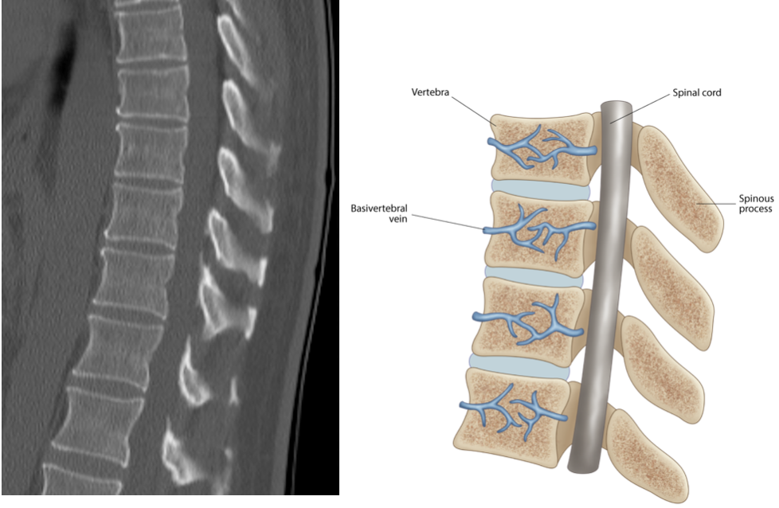
info_outline
{kind=link}
a) Sagittal CT Mid Thoracic Spine
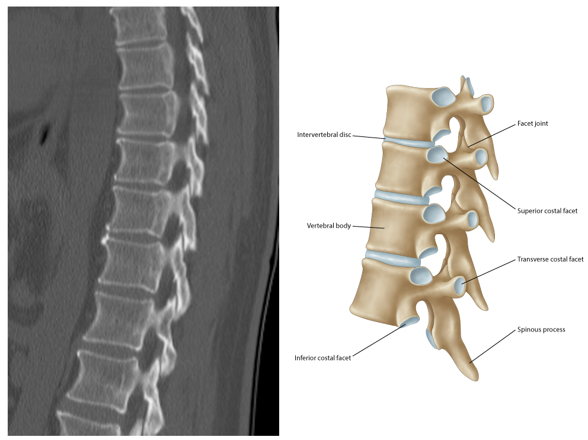
info_outline
{kind=link}
b) ParaSagittal CT Thoracic Spine
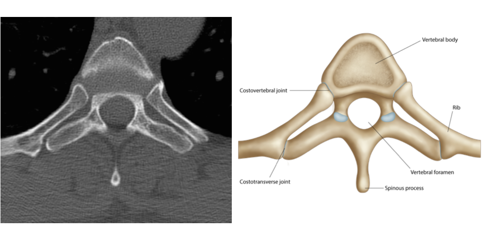
info_outline
{kind=link}
c) Axial CT Thoracic Spine
Radiographs
- Note that the AP radiograph of the lumbar spine often allows for assessment of the sacroiliac joints and no further radiographs may be required (cave:radiation exposure)
{kind=link}
MRI
- MRI acquisition of the spine includes Sagittal T1 and STIR or T2FS sequences.
- The whole spine is imaged at many centres whereas some centres will image mid-thoracic to the lumbosacral junction.
- Whole spine imaging is divided into 2 separate field of views i.e cervical to mid thoracic spine and mid thoracic to lumbosacral junction. The two images are then overlayed to provide a full spinal image.
- Axial imaging is usually not acquired . Assessment of degenerative disc disease is limited in these studies given the larger field of view and lack of axial imaging
{kind=link}
{kind=link}
{kind=link}
{kind=link}
{kind=link}
{kind=link}
{kind=link}
{kind=link}
CT
- CT of the whole spine is not performed for SpA given the extended field of view and subsequent large radiation exposure.
- Occasionally localized regions are acquired if MRI is unavailable e.g. assessment of fractures in patient with SpA.
- Discussion with your radiologist to determine optimal imaging pathway in complex cases is always encouraged.